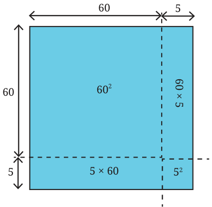
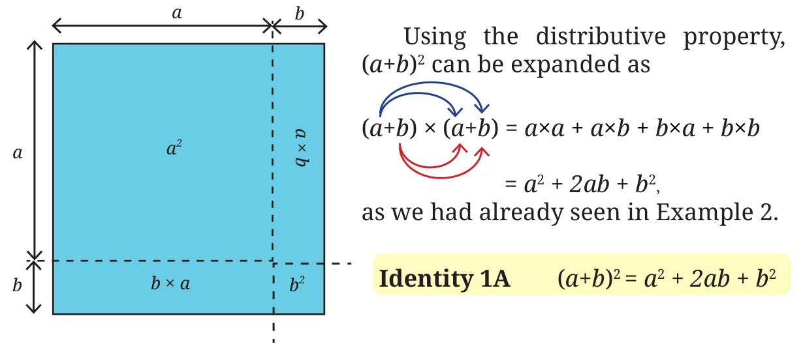
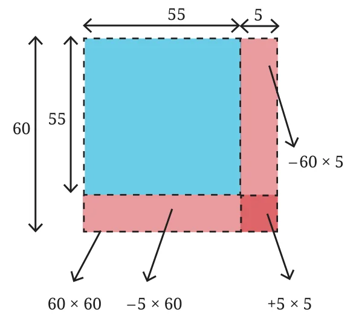
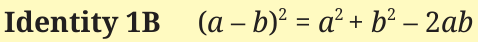

Square of the Sum/Difference of Two Numbers
The area of a square of sidelength 60 units is 3600 sq. units (\(60^2\)) and that of a square of sidelength 5 units is 25 sq. units (\(5^2\)). Can we use this to find the area of a square of sidelength 65 units? A square of sidelength 65 can be split into 4 regions as shown in the figure — a square of sidelength 60, a square of sidelength 5, and two rectangles of sidelengths 60 and 5. The area of the square of sidelength 65 is the sum of the areas of all its constituent parts. Can you find the areas of the four parts in the figure above? We get

\(65^2 = (60 + 5)^2 = 60^2 + 5^2 + 2 \times (60 \times 5)\).
\(= 3600 + 25 + 600 = 4225\) sq. units.
Let us multiply \((60 + 5) \times (60 + 5)\) using the distributive property.
\((60 + 5) \times (60 + 5) = 60 \times 60 + 5 \times 60 + 60 \times 5 + 5 \times 5\)
\(= 60^2 + 2 \times (60 \times 5) + 5^2\).
What if we write \(65^2\) as \((30 + 35)^2\) or \((52 + 13)^2\)? Draw the figures and check the area that you get. Let us look at the general expression for the square of sum of two numbers, \((a + b)^2\).

If a and b are any two integers, is \((a + b)^2\) always greater than \(a^2 + b^2\)? If not, when is it greater?
Use Identity 1A to find the values of \(104^2\), \(37^2\). (Hint: Decompose 104 and 37 into sums or differences of numbers whose squares are easy to compute.)
Use Identity 1A to write the expressions for the following.
(i) \((m + 3)^2\) (ii) \((6 + p)^2\)
Expand \((6x + 5)^2\).
| Using the Distributive Property | Using the Identity |
|---|---|
\((6x + 5)^2 = (6x + 5)\,(6x + 5)\) \(= (6x \times 6x) + (5 \times 6x) + (6x \times 5) + 5 \times 5\) \(= (6x)^2 + 2\,(6x \times 5) + 5^2\) \(= 36x^2 + 60x + 25.\) | \((6x + 5)^2 = (6x)^2 + 5^2 + 2 \times (6x \times 5)\) \(= 36x^2 + 25 + 60x.\) |
If you have difficulty remembering or using the general rule, you can just apply the distributive property to multiply and get the desired result.
Expand \((3j + 2k)^2\) using both the identity and by applying the distributive property.
Can we use \(60^2\) (=3600) and \(5^2\) (=25) to find the value of \((60 - 5)^2\) or \(55^2\)? Let us approach this through geometry by drawing a square of side length 55 sitting inside a square of sidelength 60.
Area of a square of sidelength 55 is \((60 - 5)^2 = 55^2\).
We can get the area of the square of sidelength 55 by taking the area of the square of sidelength 60 and removing the areas of the two rectangles of sidelengths 60 and 5, i.e., \(60^2 - (60 \times 5) - (5 \times 60)\). By doing this, we remove the area of the small square of sidelength 5 twice. What can we do with this expression to get the actual area?

We can add back the area of the square of sidelength 5 to this expression. That way, we are only subtracting this area once.
So,
\((60 - 5)^2 = 60^2 - (60 \times 5) - (5 \times 60) + 5^2\)
\(= 3600 - 300 - 300 + 25\)
\(= 3025\).
The area of the square of sidelength 55 is 3025 sq. units.
We have seen what \((a + b)^2\) gives when expanded. What is the expansion of \((a - b)^2\)? Using the distributive property,
\((a - b)^2 = (a - b) \times (a - b)\)
\(= (a)^2 - ba - ab + (b)^2\)
\(= a^2 - 2ab + b^2\).
We can also use the expansion of \((a + b)^2\) to find the expansion of \((a - b)^2\). Think how.
Hint: \((a - b)^2 = (a + (-b))^2\).
We can now directly use the expansion of \((a + b)^2\).
\((a + (-b))^2 = (a)^2 + (-b)^2 + 2 \times (a) \times (-b)\)

Find the general expansion of \((a - b)^2\) using geometry, as we did for \(55^2\).
Use the identity \((a - b)^2\) to find the values of (a) \(99^2\) and (b) \(58^2\).
Expand the following using both Identity 1B and by applying the distributive property
(i) \((b - 6)^2\) (ii) \((-2a + 3)^2\) (iii) \(\left(7y - \frac{3}{4z}\right)^2\)